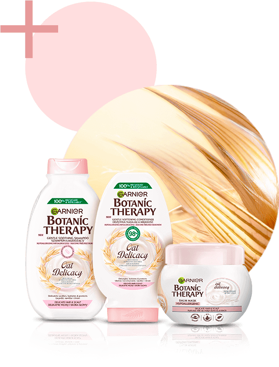

Certyfikat ECARF- formuła odpowiednia do stosowania przez alergików
mleko owsiane
+ krem ryżowy
Hipoalergiczna formuła
testowana na wrażliwej skórze głowy.
Ochrona
oraz ukojenie wrażliwej skóry głowy i włosów.
Opakowania
Butelki wykonane w 100% z plastiku z recyklingu* i odpowiednie do ponownego przetworzenia!
Intensywne nawilżenie,
miękkość i sprężystość włosów od nasady aż po same końce.
Efekt?
ukojona skóra głowy i zdrowo wyglądające włosyPrzed
Po***
opakowanie
w 100%
z i do recyklingu*
Wszystkie butelki są wykonane w 100% z plastiku z recyklingu* i nadają się do ponownego przetworzenia.
Wegańska formuła**
Marka Garnier została oficjalnie zatwierdzona przez Cruelty Free International w ramach programu Leaping Bunny.
Olej z otrąb ryżowych pozyskiwany jest w odpowiedzialny sposób, a całą gamę wyprodukowano w fabrykach, które stosują program zrównoważonego rozwoju.